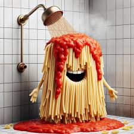

Pasta carbonara

det här är vad du behöver för att göra pasta carbonara
port spaghetti
2 äggulor
1 dl riven parmesanost
150 g pancetta eller bacon(nötköt), tärnad
2 vitlöksklyftor, finhackade
Salt och svartpeppar efter smak
Färsk persilja, hackad (valfritt)
Olja eller smör för stekning
steg för steg
Koka pastan: Koka upp en stor kastrull med saltat vatten. Tillsätt spaghettin och koka enligt förpackningens anvisningar tills den är al dente. Spara lite av pastavattnet innan du häller av pastan.
Förbered såsen: I en skål, vispa ihop äggulorna och den rivna parmesanosten. Tillsätt en nypa svartpeppar och blanda väl. Ställ åt sidan.
Stek pancettan/bacon: Hetta upp en stekpanna på medelhög värme och tillsätt lite olja eller smör. Lägg i den tärnade pancettan eller baconet och stek tills det är krispigt och gyllenbrunt. Tillsätt den finhackade vitlöken mot slutet av stekningen och fräs i ytterligare en minut. Ta bort från värmen.
Blanda allt: När pastan är klar, häll av vattnet och lägg tillbaka pastan i kastrullen. Tillsätt den stekta pancettan/baconet med vitlöken och blanda väl. Häll sedan ägg- och ostblandningen över pastan och rör snabbt för att kombinera allt. Om såsen verkar för tjock, tillsätt lite av det sparade pastavattnet för att få en krämigare konsistens.
Servera: Smaka av med salt och mer svartpeppar om det behövs. Strö över hackad persilja om du vill ha lite extra färg och smak. Servera genast medan det är varmt.
kalorier
Ingrediens
Kalorier (per 100g)
Spaghetti
158
Äggulor
322
Parmesanost
431
Pancetta/Bacon
541
Vitlök
149
Olja/Smör
884
persilja
36
Tillbaka till huvudsidan